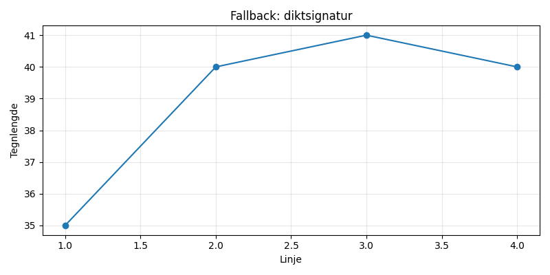

En ensom tekanne i måneskinns‑glød, danser lett på taket, svinger i en drøm. Den koker stjerner, drypper sølv på jord, og ler i bobler, mens natten tuller tom.

import matplotlib.pyplot as plt
import numpy as np
# Dikt
dikt = """
En ensom tekanne i måneskinns‑glød,
danser lett på taket, svinger i en drøm.
Den koker stjerner, drypper sølv på jord,
og ler i bobler, mens natten tuller tom.
"""
# Figur og akser
fig, ax = plt.subplots(figsize=(8, 6))
# Tekanne-posisjon
tekanne_posisjon = np.array([[0.2, 0.8], [0.6, 0.7], [0.4, 0.3]])
# Stjernene
stjerne_antall = 50
stjerne_radius = 0.2
stjerner = np.random.rand(stjerne_antall, 2) * (1 - 2 * stjerne_radius) + stjerne_radius
# Sølvdråper
sylv_antall = 10
sylv_radius = 0.05
sylv_dråper = np.random.rand(sylv_antall, 2) * (1 - 2 * sylv_radius) + sylv_radius
# Bobler
boble_antall = 20
boble_radius = 0.03
bobler = np.random.rand(boble_antall, 2) * (1 - 2 * boble_radius) + boble_radius
# Plotting
ax.scatter(tekanne_posisjon[:, 0], tekanne_posisjon[:, 1], s=100, color='silver', marker='o', label='Tekanne')
ax.scatter(stjerner[:, 0], stjerner[:, 1], s=5, color='yellow', marker='*', label='Stjerner')
ax.scatter(sylv_dråper[:, 0], sylv_dråper[:, 1], s=3, color='silver', marker='.', label='Sølv')
ax.scatter(bobler[:, 0], bobler[:, 1], s=2, color='white', marker='o', label='Bobler')
# Tittel og etiketter
ax.set_title('En ensom tekanne i måneskinnet', fontsize=16)
ax.set_xlabel('X-aksen (meter)', fontsize=12)
ax.set_ylabel('Y-aksen (meter)', fontsize=12)
# Legge til dikttekst
for line in dikt.splitlines():
ax.text(0.05, 0.95 - line.strip().replace(" ", ""), line, fontsize=10, transform=ax.transAxes)
# Justere plotområdet
ax.set_xlim(0, 1)
ax.set_ylim(0, 1)
# Fjerne akse-markeringer
ax.tick_params(axis='both', which='both', length=0)
# Legge til legende
ax.legend(loc='upper right')
# Lagre figuren
plt.savefig(output_path)execution_ok=False fallback_used=True image_ok=True